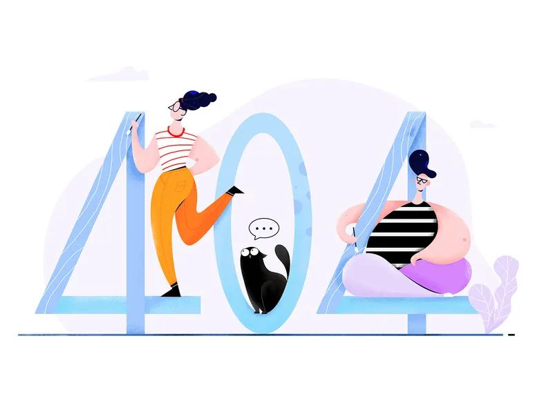
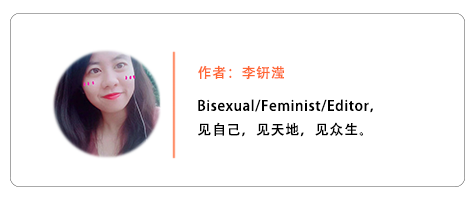

疫情之下的众生相
原文链接 备份链接 2020年杭州帕勒芒行动者首次活动结束征集。本次活动的主题是《疫情之下的众生相》。这段时间由于疫情的影响，大家日常的生活节奏和习惯都一定程度上被打破，心情也不免蒙上一层阴影。相信这段时期对于大家来说都是一个特殊的经历， …

摘要：本文为“2020，我们的生活在继续”征文大赛的投稿作品。2020年，本来是计划中作为人生转型的一年。疫情一来，一切都变成了问号。
随着不能出门的日子越来越长，我的失业焦虑也愈发严重。
时至今日，已经是我在家中无所事事玩手机的第五周了。
这场突如其来的时疫，打断了我所有的计划——原本确定的一个线下课程被取消，原本准备好的新工作转型也被迫中止。如今，为了避免自己被传染上疫情，我只能躲在房子里，无奈地等待着好转的消息。那些对未来的种种期待，也都变成了一个巨大的问号。
就像是一只被彻底束缚住的蝴蝶，试图张开翅膀，却无法飞翔。
一月十七号，我结束学业，从国外飞回来。
在此之前，因为身处外地，再加上课业繁重，我对国内的信息并不关注，也并不了解本地的一些新闻事件。我只是按照原来的计划，回来与家人过年，然后等过了元宵，继续出去上完最后一周的课，接下来便进入找工作的繁忙状态。
今年，应该和过往的新年没有什么不一样，我想。看着街上琳琅满目的年货，与一直努力吆喝的摊贩，我情不自禁地感慨：“又一年了。”此时的我，并不知道在之后的一个月，梦里总是会出现这个繁荣、朝气的场景。

回家休息了一天后，我终于打开了社交平台，想知道在错过了解信息的这段时间里，国内有没有发生什么新奇、好玩的事情。但随处可见的，则是各种各样的求助信息，这让我突然意识到疫情的严重性。可我查阅了很久，却找不到详细的报道，也没有明确的数据，只能继续关注与等待了。
十九号的时候，我出门与朋友见面，谈起了疫情的状况。朋友告诉我，他也有看到相关信息，而且现在恰逢春运进行时，不知道病情会发展到什么程度，很令人担忧。不过，朋友也有点庆幸，毕竟目前只是“武汉肺炎”，离我们居住的环境那么遥远，应该不会有什么危险。
听完朋友的分享，我的心情轻松了一些。但对于疫情，我还是处在一知半解的状态中。我很犹豫，是否要买充足的口罩，而且究竟买什么类型的口罩可以预防，又如何避免买到假口罩，这些一连串的问题，瞬间在我脑中宛如鞭炮噼里啪啦地响起。
然而，到了二十号。求助的信息变得越来越多，与此相关的视频也随之在社交平台上被转发与屏蔽，传染与致死成为了当天的关键词。我开始紧张起来了，重复地跟家人讲述着疫情的严重性，我们需要准备哪些物资，以及尽量少出门。
信息正在慢慢地变多，甚至向我蜂拥而来。我对此并没有任何把握，也不知如何辨别真假，只能保持警惕。
那天之后，先前与朋友约好的新年聚会，唯有全部取消。所有的人际交往，也随着饭店、酒吧、电影院等社交场所的关闭，从线下转移到了线上，以此维系彼此的感情。
我的睡眠时间变得越来越迟，生活作息也逐渐日夜颠倒化。每天一睁眼，已经是接近中午，然后开始不停地看着手机里的各种报道、数字、图片与视频。有时候一看，就看到了凌晨。除了家人叫我起床吃饭，其余时间，我都在浏览疫情相关的信息。
一种因对疾病无知而产生的恐慌感，正在慢慢充斥着普通人的意识与身体。在我看到的一个视频中，无论是轻微感冒还是真的被感染肺炎的人，大家都乌泱乌泱地挤在武汉的医院里，等待着医生的诊断与救治。人类的脆弱，在那个场景中展露无疑。
与此同时，我也注意到了医护人员在物资不足的情况下，依然坚守岗位。在那些后来被删除的视频中，有一个护士撕心裂肺地喊着“我也不想死”——但事实又是如此残酷，这是一场瘆人的持久战。
但我更加担忧的是，这些珍贵的、值得存入历史与每个人记忆的信息，很快就会被以辟谣为由删除。密集的信息，也瞬间从自由讨论变成屏蔽后的一片空白。这些文字、图片的缺席，也会令大家更加对接下来如何生活，有更多的疑虑。

除了忍受信息不流通带给我的无力感，我也与朋友加入了与家人的劝导与科普中。因为家中长辈不爱看新闻，对疫情的了解不多，出门也仍然不戴口罩。为此，一些朋友特别开了一个聊天群，讨论这件事，并制作了很多符合中老年人阅读方式的文章与视频，提醒家人目前疫情的严峻程度。
慢慢地，我再也承受不住疫情持续的冲击，开始不停地哭，情不自禁地一边看信息，一边流泪——既心疼那些患者，也心疼那些医护人员。偶尔，我也会主动找朋友语音聊天，试图分享一些有趣的事情和经历，让自己可以抽离疫情。但聊不到很久，大家又会开始叹气，谈起那些令自己悲伤或者愤怒的信息。
年轻一代，不仅仅是肉身困在家里，在牢笼中生长；甚至我们的公民意识，也因为不能发声，只能囚禁在自己的脑中。
后来，我终于忍不住出门了。街上空荡荡的，只有零零散散的两三个人走过。昔日吵吵闹闹的春节，如今已经变得一片平静，让我在这个本就寒冷的冬天里，更加觉得难过。那首每年从街头重复到街尾的“恭喜发财”，现在则变成了听起来十分卑微的祝福——“祝你健健康康”。
我从来没有想过，在有生之年，自己会过一个如此冷清的新年。
2020年，本来是我计划中，作为人生转型的一年。
回国前，我申请了一项研究课程，为期一周，过完春节就去。但现在课程被通知取消，签证也没用了。这项心仪的课程，也不知道是否在疫情后会重开。我甚至有点后悔，如果自己没有回国，可能现在就不需要每天在家落泪，陷入无法自拔的焦虑和悲痛中。
但那些没有走的同学却告诉我，即使在疫情特别严重之前回来，也不一定会心安。因为隔离只是小事，最难以忍受的是区别对待——在疫情前期，有很多武汉人甚至湖北人，都被当成是“肺炎”本身被排挤、被无视。留在异乡的他们，也同样有因为口音，无辜地被陌生人嫌弃的遭遇。
学业被取消只是开头，我的工作转型也被迫中止。
做了三年自由职业者后，我想换一个环境，去一个新的工作领域，认识一些新的朋友。我准备好了简历，准备结束学业后，选择做一个“社畜”。可能我会过得很难，比如忍受职场斗争，或者每天加班，甚至是恐怖的职场性别歧视。但我都准备好了，抱着对2020年的无限期待，我想重新定义自己的状态与身份。
但疫情却彻底地、无情地碾碎了上述愿景。在过去的一个月里，我无法出门，也无法思考。每天只是从房间走到客厅，或者从厨房走到厕所。唯一能够让我有感觉的地方，却是在阳台的小小空间里，被下午温暖的阳光晒着，可以恢复一些力量。
那么再等等，会好起来吗？
很多行业、很多公司甚至个体户都因为这次措手不及的时疫，本应在春节前后可赚得盆满钵满，如今却因缺乏资金导致难以继续运营。在疫情之后，他们是否还能提供岗位，给出工资呢？
而且，即使现在出去找工作，每个城市的复工时间不定，又要面临自费隔离十四天，找到可租的房子也不确定会不会被赶出小区——生活的一切，通通都变成了一个巨大的问号。
我不是海子，但现在的我，却只希望自己可以面朝大海，感受春暖花开。
本次征文大赛中，我们将选出25位“最佳读者”。粉丝读者们只要多多转发本文或之后发布的征文作品到群聊或朋友圈，发送相关截图给客服尖小椒（微信号jianxiaojiao45），或在参与活动的投稿作品下留言评论，就有机会得到一份专属粉丝读者们的惊喜礼包！
站在2020的开端，我们记录当下，想象春暖花开。

请尊重原创，保护版权
本文为“2020，我们的生活在继续”征文大赛的投稿作品，系橙雨伞公益和尖椒部落共同开发和制作。欢迎转载，但请保留本段文字：转载自关爱女性，赋能女性远离暴力的跨界公益项目“橙雨伞”（微信ID：chengyusan2016）＋中国女工权益与生活资讯平台“尖椒部落”（jianjiaobuluo.com）。并保留以下作者信息：


原文链接 备份链接 2020年杭州帕勒芒行动者首次活动结束征集。本次活动的主题是《疫情之下的众生相》。这段时间由于疫情的影响，大家日常的生活节奏和习惯都一定程度上被打破，心情也不免蒙上一层阴影。相信这段时期对于大家来说都是一个特殊的经历， …
原文链接 备份链接 播放音乐 | 阅读效果更佳 感谢 | 您对霍超LEGAL的关注、阅读与分享 每天在小房间里最经常的就是看看各种视频网站，获取一些信息，更是缓解一些无聊，不过在潜移默化中，让我细思极恐的是的越来越精确的大数据算法，推送的 …
原文链接 备份链接 从一开始，余昌平就想过自己可能会被感染。他是武汉大学人民医院呼吸与危重症医学科的医生，疫情发生后，他成为医院冠状病毒防治专家组的成员。 专家组成员被感染？听起来有点严重。余昌平觉得很正常：“接触那么多病人，总是会感染 …
原文链接 备份链接 这题来自Voicer，他们采访了包括我们在内的6位创意行业内不同分支的同侪，分享了这次疫情对他们的影响以及他们相应的思考和应对策略。 深度专访：疫情之下的创意从业者，你们还好吗？ 而在这个心情极其复杂的超长春节里，我 …
原文链接 备份链接 《创新经济战疫计划》，是燃财经在新型肺炎疫情期间推出的特别栏目，关注创新经济企业遇到的新难题、商讨应该采取的新对策，希望能够帮助中小企业一起战胜挑战、把握机会。 作者 | 苏琦 编辑 | 魏佳 “金三银四”的春招季，如 …